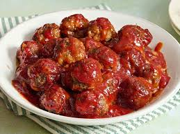

Cape Cod Cocktail Meatballs

These impressive Cape Cod cocktail meatballs are perfect for Christmas, New Year's, or any celebration. This is my version, but the recipe originated in Cape Cod (cranberry country).
Ingredients
- 2 pounds ground beef
- 1 cup bread crumbs
- 2 large eggs
- ¼ cup chopped fresh parsley
- 2 tablespoons grated onion
- 2 tablespoons soy sauce
- ¼ teaspoon garlic powder
- 1 (16 ounce) can jellied cranberry sauce (such as Ocean Spray)
- 1 ½ cups ketchup
- 2 ½ tablespoons packed brown sugar
- 1 tablespoon fresh lemon juice
Directions
- Gather all ingredients. Preheat the oven to 375 degrees F (190 degrees C).

- Combine ground beef, bread crumbs, eggs, parsley, onion, soy sauce, and garlic powder in a bowl until thoroughly mixed.

Home Page